OpenCV 的介绍
1 简介
OpenCV 是一个基于 BSD 许可（开源）发行的跨平台计算机视觉库，可以运行在 Linux、 Windows、Android 和 Mac OS 操作系统上。它轻量级而且高效——由一系列 C 函数和少量 C++ 类构成，同时提供了 Python、Ruby、MATLAB 等语言的接口，实现了图像处理和计算机视觉方 面的很多通用算法。

2 安装
建议使用 pip 来安装
pip install opencv-python
3 导入 opencv
import cv2 as cv import numpy as np lenna = 'static/image/2019/01/lenna.png'
4 使用介绍
4.1 图片读写
4.1.1 读取图片
opencv 的彩色的图片采用 BGR 的排列方式，和我们通常使用 RGB 的方式有所不同。
img = cv.imread(lenna) print('img type = {}'.format(type(img))) print('img.shape = {}'.format(img.shape)) gray_image = cv.imread(lenna, cv.IMREAD_GRAYSCALE) print('gray_image.shape = {}'.format(gray_image.shape))
img type = <class 'numpy.ndarray'> img.shape = (512, 512, 3) gray_image.shape = (512, 512)
4.1.2 显示图片
cv.imshow('image', img) cv.waitKey(0) cv.destroyAllWindows()
4.1.3 写入图片
使用 matplotlib 来存储图片
import cv2 as cv import numpy as np import matplotlib.pyplot as plt filename = '../static/image/2019/01/image094201.png' img = cv.imread('../static/image/2019/01/lenna.png') img = cv.cvtColor(img, cv.COLOR_BGR2RGB) plt.imshow(img) plt.savefig(filename) return filename
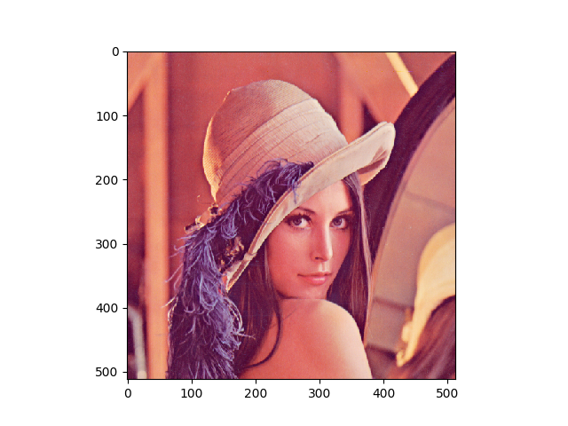
使用 opencv 来存储图片
import numpy as np import matplotlib.pyplot as plt import cv2 as cv filename = '../static/image/2019/01/image094813.png' img = cv.imread('../static/image/2019/01/lenna.png') gray = cv.cvtColor(img, cv.COLOR_BGR2GRAY) cv.imwrite(filename, gray) return filename

4.2 视频操作
4.2.1 读取摄像头数据
import numpy as np import cv2 as cv cap = cv.VideoCapture(0) while(True): # Capture frame-by-frame ret, frame = cap.read() # get/set props # frame_width = cap.get(cv.CAP_PROP_FRAME_WIDTH) # frame_height = cap.get(cv.CAP_PROP_FRAME_HEIGHT) # ret = cap.set(cv.CAP_PROP_FRAME_WIDTH, 320) # ret = cap.set(cv.CAP_PROP_FRAME_HEIGHT, 240) # Our operations on the frame come here gray = cv.cvtColor(frame, cv.COLOR_BGR2GRAY) # Display the resulting frame cv.imshow('frame', gray) if cv.waitKey(1) & 0xFF == ord('q'): break # When everything done, release the capture cap.release() cv.destroyAllWindows()
4.2.2 播放视频文件
import numpy as np import cv2 as cv cap = cv.VideoCapture('vtest.avi') while(cap.isOpened()): ret, frame = cap.read() gray = cv.cvtColor(frame, cv.COLOR_BGR2GRAY) cv.imshow('frame', gray) if cv.waitKey(1) & 0xFF == ord('q'): break cap.release() cv.destroyAllWindows()
4.2.3 保存视频文件
import numpy as np import cv2 as cv cap = cv.VideoCapture(0) # Define the codec and create VideoWriter object fourcc = cv.VideoWriter_fourcc(*'XVID') out = cv.VideoWriter('output.avi', fourcc, 20.0, (640, 480)) while(cap.isOpened()): ret, frame = cap.read() if ret == True: frame = cv.flip(frame, 0) # write the flipped frame out.write(frame) cv.imshow('frame', frame) if cv.waitKey(1) & 0xFF == ord('q'): break else: break # Release everything if job is finished cap.release() out.release() cv.destroyAllWindows()
4.3 画图函数
4.3.1 画几何图形
画几何图形，包括：线条、圆、矩形、椭圆等
import numpy as np import cv2 as cv import matplotlib.pyplot as plt filename = '../static/image/2019/01/image100920.png' # Create a black image img = np.zeros((320, 512, 3), np.uint8) # cv.line(img, pt1, pt2, color, thickness) cv.line(img, (0, 0), (300, 100), (255, 0, 0), 5) # cv.rectangle(img, pt1, pt2, color, thickness cv.rectangle(img, (384, 0), (510, 128), (0, 255, 0), 3) # cv.circle(img, center, radius, color, thickness) cv.circle(img, (447, 63), 63, (0, 0, 255), -1) # cv.ellipse(img, center, axes, angle, startAngle, endAngle, color, thickness) cv.ellipse(img, (256, 256), (100, 50), 0, 0, 180, 255, -1) pts = np.array([[10, 5], [20, 30], [70, 20], [50, 10]], np.int32) pts = pts.reshape((-1, 1, 2)) cv.polylines(img, [pts], True, (0, 255, 255)) plt.imshow(img) plt.savefig(filename) # cv.imwrite(filename, img) return filename
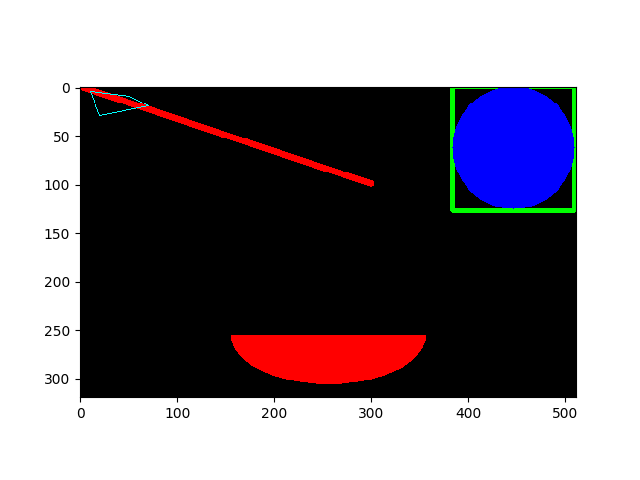
4.3.2 写文字
import numpy as np import cv2 as cv import matplotlib.pyplot as plt filename = '../static/image/2019/01/image102219.png' img = np.ones((320, 512, 3), np.uint8) * 255 # cv.putText(img, text, org, font, fontScale, color, thickness, bottonLeftOrigin) img = cv.putText(img, 'OpenCV', (100, 100), cv.FONT_HERSHEY_PLAIN, 4, (0, 0, 255), 2, cv.LINE_AA) # cv.imwrite(filename, img) plt.imshow(img) plt.savefig(filename) return filename
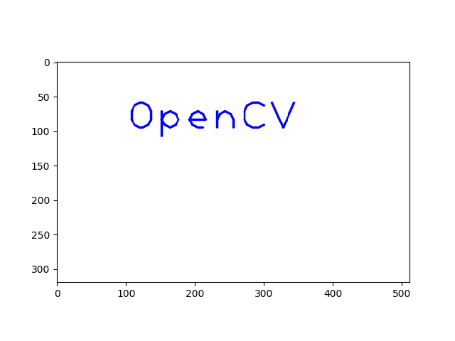
5 核心操作
5.1 基本操作
5.1.1 像素操作
img = cv.imread(lenna) print('px[4, 5] = {}'.format(img[4, 5])) print('blut px[4, 5, 0] = {}'.format(img[4, 5, 0]))
px[4, 5] = [116 129 226] blut px[4, 5, 0] = 116
5.1.2 相片属性
img = cv.imread(lenna) print('shape = {}, size = {}, dtype = {}'.format(img.shape, img.size, img.dtype))
shape = (512, 512, 3), size = 786432, dtype = uint8
5.1.3 子图片和通道
import numpy as np import matplotlib.pyplot as plt import cv2 as cv filename = '../static/image/2019/01/image135851.png' lenna = '../static/image/2019/01/lenna.png' img = cv.cvtColor(cv.imread(lenna), cv.COLOR_BGR2RGB) subimg = img[100:400, 100:400] #rimg, gimg, bimg = cv.split(subimg) rimg, gimg, bimg = subimg[:, :, 0], subimg[:, :, 1], subimg[:, :, 2] # nrow, ncol, index plt.subplot(231), plt.imshow(img), plt.title('original') plt.subplot(233), plt.imshow(subimg), plt.title('croped') plt.subplot(234), plt.imshow(rimg), plt.title('red channel') plt.subplot(235), plt.imshow(gimg), plt.title('green channel') plt.subplot(236), plt.imshow(bimg), plt.title('blue channel') plt.savefig(filename) return filename
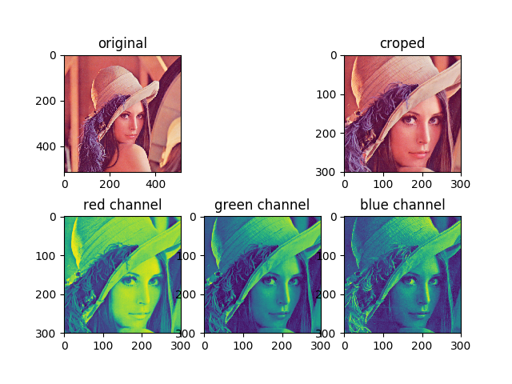
5.1.4 图片边框
import numpy as np import matplotlib.pyplot as plt import cv2 as cv filename = '../static/image/2019/01/image141331.png' lenna = '../static/image/2019/01/lenna.png' BLUE = [255, 0, 0] img = cv.cvtColor(cv.imread(lenna), cv.COLOR_BGR2RGB) replicate = cv.copyMakeBorder(img, 20, 20, 20, 20, cv.BORDER_REPLICATE) reflect = cv.copyMakeBorder(img, 20, 20, 20, 20, cv.BORDER_REFLECT) reflect101 = cv.copyMakeBorder(img, 20, 20, 20, 20, cv.BORDER_REFLECT_101) wrap = cv.copyMakeBorder(img, 20, 20, 20, 20, cv.BORDER_WRAP) constant = cv.copyMakeBorder(img, 20, 20, 20, 20, cv.BORDER_CONSTANT, value=BLUE) plt.subplot(231), plt.imshow(img, 'gray'), plt.title('ORIGINAL'), plt.xticks([]), plt.yticks([]) plt.subplot(232), plt.imshow(replicate, 'gray'), plt.title('REPLICATE'), plt.xticks([]), plt.yticks([]) plt.subplot(233), plt.imshow(reflect, 'gray'), plt.title('REFLECT'), plt.xticks([]), plt.yticks([]) plt.subplot(234), plt.imshow(reflect101, 'gray'), plt.title('REFLECT_101'), plt.xticks([]), plt.yticks([]) plt.subplot(235), plt.imshow(wrap, 'gray'), plt.title('WRAP'), plt.xticks([]), plt.yticks([]) plt.subplot(236), plt.imshow(constant, 'gray'), plt.title('CONSTANT'), plt.xticks([]), plt.yticks([]) plt.savefig(filename) return filename
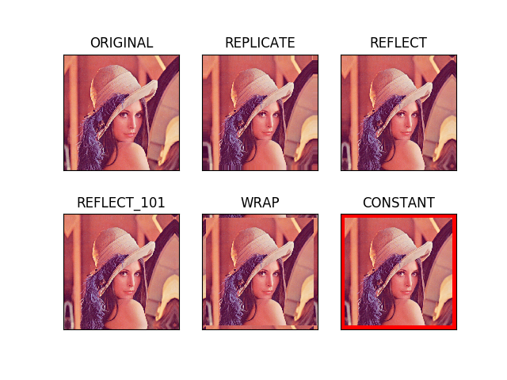
5.2 算术操作
5.2.1 图片相加
x = np.uint8([250]) y = np.uint8([10]) print('cv.add(x,y) = {}'.format(cv.add(x, y))) # 250+10 = 260 => 255 print('x + y = {}'.format(x + y)) # 250+10 = 260 % 256 => 4
cv.add(x,y) = [[255]] x + y = [4]
5.2.2 图片混合(Blending)
import numpy as np import matplotlib.pyplot as plt import cv2 as cv filename = '../static/image/2019/01/image142651.png' lenna = cv.cvtColor(cv.imread('../static/image/2019/01/lenna.png'), cv.COLOR_BGR2RGB) circle = np.zeros(lenna.shape).astype('uint8') cx, cy = int(lenna.shape[0] / 2), int(lenna.shape[1] / 2) circle = cv.circle(circle, (cx, cy), 250, (255, 255, 255), -1) # dst = 0.7*lenna + 0.3*circle + 0 dst = cv.addWeighted(lenna, 0.7, circle, 0.3, 0) plt.subplot(131), plt.imshow(lenna), plt.title('lenna'), plt.xticks([]), plt.yticks([]) plt.subplot(132), plt.imshow(circle), plt.title('circle'), plt.xticks([]), plt.yticks([]) plt.subplot(133), plt.imshow(dst), plt.title('dst'), plt.xticks([]), plt.yticks([]) plt.savefig(filename) return filename
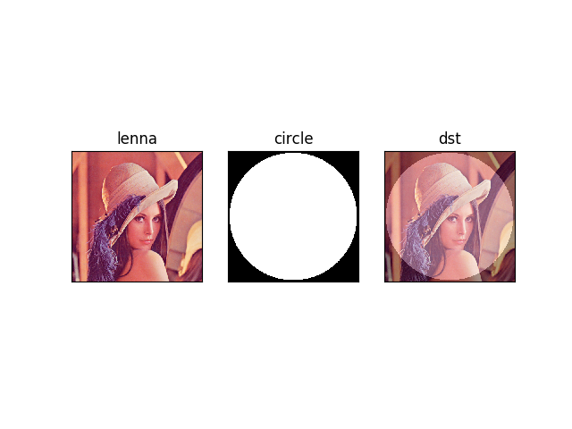
5.2.3 位操作
import numpy as np import matplotlib.pyplot as plt import cv2 as cv filename = '../static/image/2019/01/image150141.png' lenna = cv.cvtColor(cv.imread('../static/image/2019/01/lenna.png'), cv.COLOR_BGR2RGB) roi = np.zeros(lenna.shape).astype('uint8') cx, cy = int(lenna.shape[0] / 2), int(lenna.shape[1] / 2) roi = cv.circle(roi, (cx, cy), 250, (255, 255, 255), -1) andimg = cv.bitwise_and(lenna, roi) orimg = cv.bitwise_or(lenna, roi) plt.subplot(221), plt.imshow(lenna), plt.title('lenna'), plt.xticks([]), plt.yticks([]) plt.subplot(222), plt.imshow(roi), plt.title('roi'), plt.xticks([]), plt.yticks([]) plt.subplot(223), plt.imshow(andimg), plt.title('and'), plt.xticks([]), plt.yticks([]) plt.subplot(224), plt.imshow(orimg), plt.title('or'), plt.xticks([]), plt.yticks([]) plt.savefig(filename) return filename
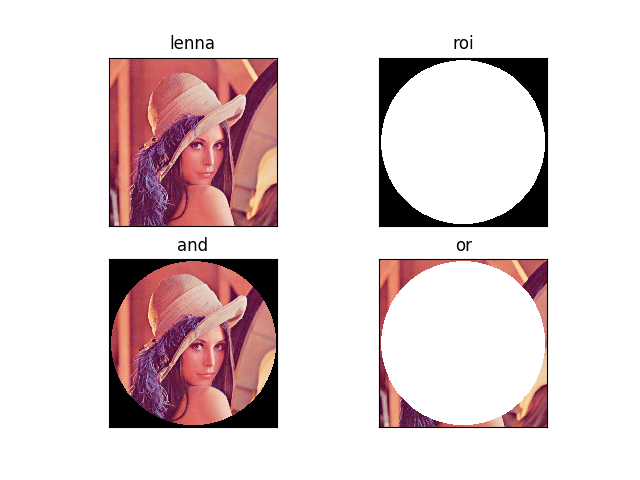
5.3 图片处理
5.3.1 几何变换
import numpy as np import matplotlib.pyplot as plt import cv2 as cv filename = '../static/image/2019/01/image152231.png' lenna = cv.cvtColor(cv.imread('../static/image/2019/01/lenna.png'), cv.COLOR_BGR2RGB) def scale(img, scale_x, scale_y): h, w = img.shape[:2] return cv.resize(img, (int(h * scale_y), int(w * scale_x)), interpolation=cv.INTER_CUBIC) def translation(img, trans_x, trans_y): h, w = img.shape[:2] M = np.float32([[1, 0, trans_x], [0, 1, trans_y]]) return cv.warpAffine(img, M, (h, w)) def rotate(img, angle): h, w = img.shape[:2] center = int(w / 2.0), int(h / 2.0) M = cv.getRotationMatrix2D(center, angle, 1) return cv.warpAffine(img, M, (w, h)) def affine(img, pts1, pts2): h, w, d = img.shape M = cv.getAffineTransform(pts1, pts2) return cv.warpAffine(img, M, (w, h)) def perspective(img, pts1, pts2): h, w, d = img.shape M = cv.getPerspectiveTransform(pts1, pts2) return cv.warpPerspective(img, M, (w, h)) lenna_scale = scale(lenna, 1.5, 2) lenna_trans = translation(lenna, 50, 100) lenna_rotate120 = rotate(lenna, 120) pts1 = np.float32([[50, 50], [200, 50], [50, 200]]) pts2 = np.float32([[10, 100], [200, 50], [100, 250]]) # mapping three points from origin picture to dest picture, using affine transform lenna_affine = affine(lenna, pts1, pts2) pts3 = np.float32([[0, 0], [512, 0], [0, 512], [512, 512]]) pts4 = np.float32([[100, 300], [350, 300], [0, 512], [512, 512]]) # mapping four points, using perspective transform lenna_perspective = perspective(lenna, pts3, pts4) plt.subplot(231), plt.imshow(lenna), plt.title('lenna'), plt.xticks([]), plt.yticks([]) plt.subplot(232), plt.imshow(lenna_scale), plt.title('scale'), plt.xticks([]), plt.yticks([]) plt.subplot(233), plt.imshow(lenna_trans), plt.title('translation'), plt.xticks([]), plt.yticks([]) plt.subplot(234), plt.imshow(lenna_rotate120), plt.title('rotate 120$\degree$'), plt.xticks([]), plt.yticks([]) plt.subplot(235), plt.imshow(lenna_affine), plt.title('affine'), plt.xticks([]), plt.yticks([]) plt.subplot(236), plt.imshow(lenna_perspective), plt.title('perspective'), plt.xticks([]), plt.yticks([]) plt.savefig(filename) return filename
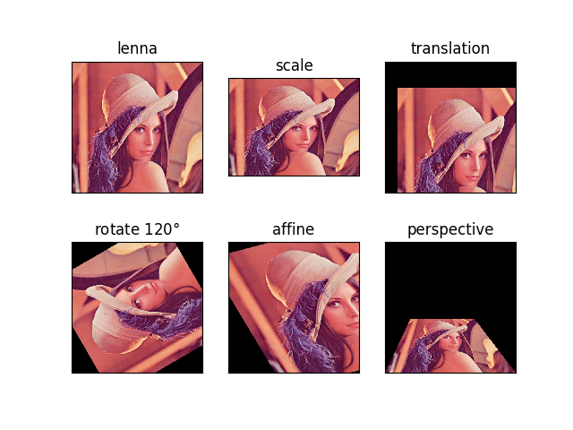
5.3.2 二值化(Thresholding)
- 普通二值化
import numpy as np import matplotlib.pyplot as plt import cv2 as cv filename = '../static/image/2019/01/image190450.png' img = cv.imread('../static/image/2019/01/lena_meyer.png', 0) ret, thresh1 = cv.threshold(img, 127, 255, cv.THRESH_BINARY) ret, thresh2 = cv.threshold(img, 127, 255, cv.THRESH_BINARY_INV) ret, thresh3 = cv.threshold(img, 127, 255, cv.THRESH_TRUNC) ret, thresh4 = cv.threshold(img, 127, 255, cv.THRESH_TOZERO) ret, thresh5 = cv.threshold(img, 127, 255, cv.THRESH_TOZERO_INV) titles = ['Original Image', 'BINARY', 'BINARY_INV', 'TRUNC', 'TOZERO', 'TOZERO_INV'] images = [img, thresh1, thresh2, thresh3, thresh4, thresh5] for i in range(6): plt.subplot(2, 3, i+1), plt.imshow(images[i], 'gray') plt.title(titles[i]) plt.xticks([]), plt.yticks([]) plt.savefig(filename) return filename
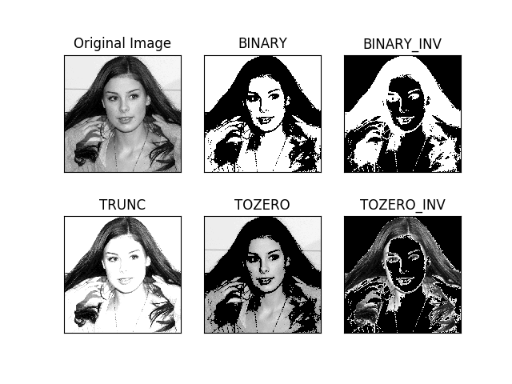
- 自适应二值化
import numpy as np import matplotlib.pyplot as plt import cv2 as cv filename = '../static/image/2019/01/image191045.png' img = cv.imread('../static/image/2019/01/lena_meyer.png', 0) img = cv.medianBlur(img, 5) ret, th1 = cv.threshold(img, 127, 255, cv.THRESH_BINARY) th2 = cv.adaptiveThreshold(img, 255, cv.ADAPTIVE_THRESH_MEAN_C, cv.THRESH_BINARY, 11, 2) th3 = cv.adaptiveThreshold(img, 255, cv.ADAPTIVE_THRESH_GAUSSIAN_C, cv.THRESH_BINARY, 11, 2) titles = [ 'Original Image', 'Global Thresholding (v = 127)', 'Adaptive Mean Thresholding', 'Adaptive Gaussian Thresholding' ] images = [img, th1, th2, th3] for i in range(4): plt.subplot(2, 2, i+1), plt.imshow(images[i], 'gray') plt.title(titles[i]) plt.xticks([]), plt.yticks([]) plt.savefig(filename) return filename
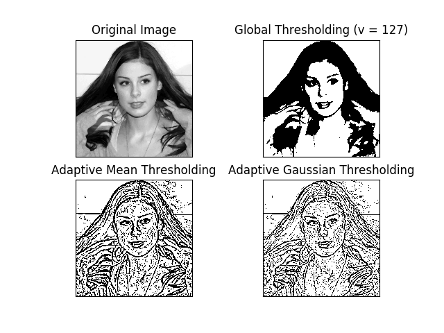
- Otsu 二值化
import numpy as np import matplotlib.pyplot as plt import cv2 as cv filename = '../static/image/2019/01/image193021.png' img = cv.imread('../static/image/2019/01/lenna.png',0) # global thresholding ret1,th1 = cv.threshold(img,127,255,cv.THRESH_BINARY) # Otsu's thresholding ret2,th2 = cv.threshold(img,0,255,cv.THRESH_BINARY+cv.THRESH_OTSU) # Otsu's thresholding after Gaussian filtering blur = cv.GaussianBlur(img,(5,5),0) ret3,th3 = cv.threshold(blur,0,255,cv.THRESH_BINARY+cv.THRESH_OTSU) images = [img, th1, th2, th3] for i in range(4): plt.subplot(2,2, i+1), plt.imshow(images[i], 'gray') plt.xticks([]), plt.yticks([]) plt.savefig(filename) return filename
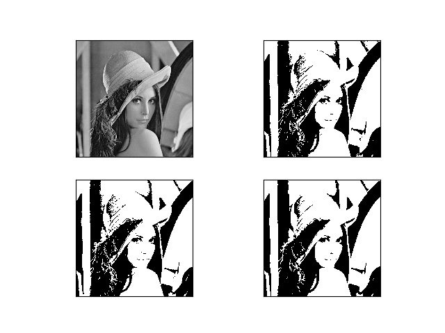
5.3.3 平滑(Smoothing Images)
- 卷积
import numpy as np import matplotlib.pyplot as plt import cv2 as cv filename = '../static/image/2019/01/image190747.png' img = cv.imread('../static/image/2019/01/lena_meyer.png') img = cv.cvtColor(img, cv.COLOR_BGR2RGB) kernel = np.ones((5, 5), np.float32)/25 dst = cv.filter2D(img, -1, kernel) plt.subplot(121),plt.imshow(img),plt.title('Original') plt.xticks([]), plt.yticks([]) plt.subplot(122),plt.imshow(dst),plt.title('Averaging') plt.xticks([]), plt.yticks([]) plt.savefig(filename) return filename
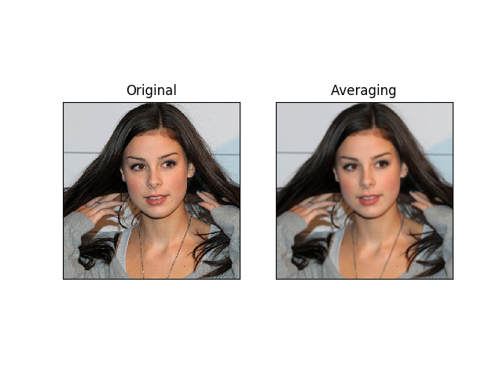
5.3.4 Canny 边界检测
import numpy as np import matplotlib.pyplot as plt import cv2 as cv filename = '../static/image/2019/01/image203420.png' img = cv.imread('../static/image/2019/01/lena_meyer.png', 0) edges=cv.Canny(img, 100, 200) plt.subplot(121), plt.imshow(img, cmap='gray') plt.title('Original Image'), plt.xticks([]), plt.yticks([]) plt.subplot(122), plt.imshow(edges, cmap='gray') plt.title('Edge Image'), plt.xticks([]), plt.yticks([]) plt.savefig(filename) return filename
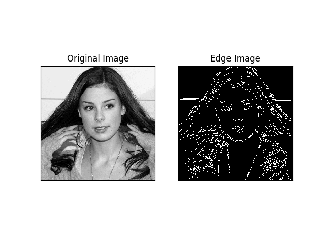